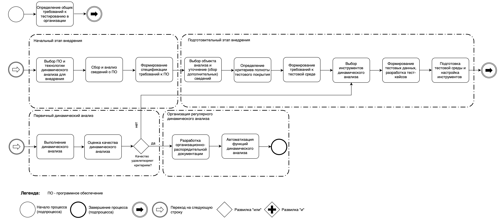
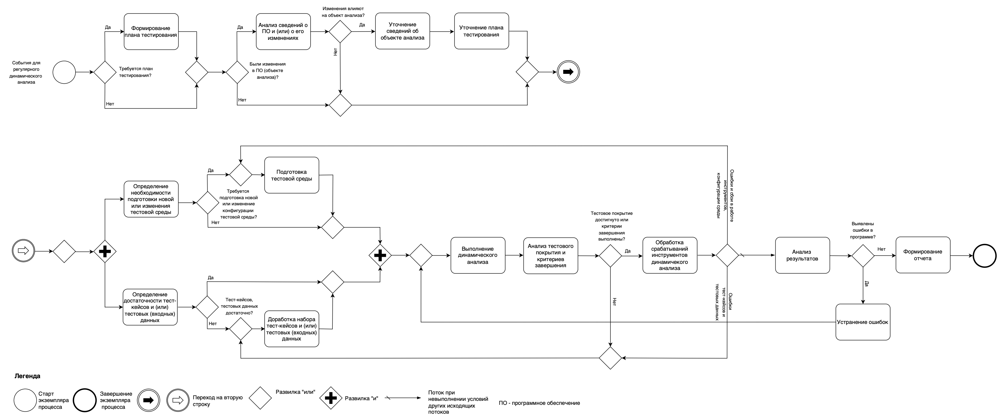
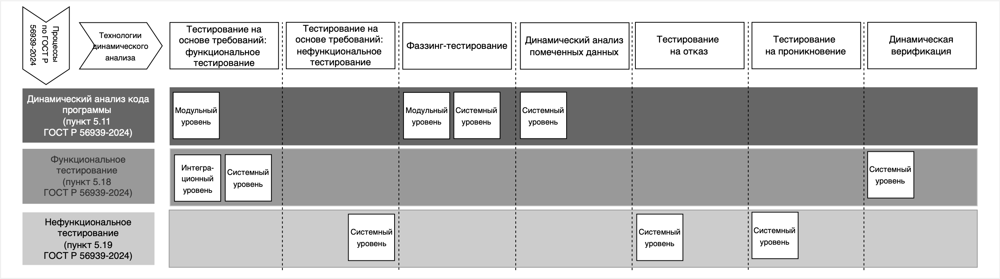

AFL++: от первого запуска до исправления
Подготовка WSL2 и Ubuntu, сборка C++ цели, запуск фаззинга, диагностика ASan и повторная проверка.
Документ устанавливает общие требования к технологиям динамического анализа, к внедрению и регулярному выполнению процессов разработки безопасного ПО, в которых эти технологии применяются, а также требования к инструментам и специалистам. Стандарт дополняет и уточняет ГОСТ Р 56939-2024 в части тестирования ПО в режиме функционирования — то есть в динамике.
Изучите технологии и требования проекта, затем пройдите практикум: найдите сбой, объясните причину, исправьте код и сохраните результаты повторной проверки.
Начать с терминов · Методички и примеры · Полный текст проекта стандарта
Занятие начинаем с терминологии: три стандарта используют близкие слова в разных значениях. Ниже — определения по текстам документов, дословно, с указанием пункта.
проект ГОСТ Р «Защита информации. Разработка безопасного программного обеспечения. Технологии динамического анализа. Общие требования»
| Термин | Определение | Пункт |
|---|---|---|
| автоматизированное тестирование | Способ тестирования (анализа), реализуемый с использованием инструментальных средств для запуска тестирования, позволяющий минимизировать участие человека в процессе тестирования. Примечание - Тестовые примеры частично или полностью выполняются специальными инструментальными средствами, однако разработку тестовых примеров и сценариев тестирования, подготовку данных, анализ результатов выполнения может выполнять человек. | 3.1.1 |
| автоматическое тестирование | Способ тестирования (анализа), реализуемый с использованием инструментальных средств при наступлении определенных событий (условий), заданных человеком, но не требующий непосредственного участия человека в процессе тестирования. Примечание - Примером является автоматический запуск анализа при обновлении программного кода путем интеграции инструментальных средств с системой непрерывной интеграции. | 3.1.2 |
| датчик срабатывания ошибок | Конструкция исходного или бинарного кода, которая вставляется в программу при ее сборке из исходного кода, интерпретации или двоичной трансляции и которая при обнаружении определенной ошибки в ходе выполнения программы вызывает ее аварийное завершение и (или) выдачу диагностической информации. | 3.1.3 |
| динамический анализ | Вид работ по исследованию программы (объекта анализа), основанный на анализе поведения и кода программы в режиме непосредственного исполнения (функционирования). | 3.1.4 |
| инструмент динамического анализа | Инструментальное средство, которое выполняет динамический анализ автоматическим или автоматизированным способом. | 3.1.5 |
| исполняемый файл | Бинарный файл, содержащий исполняемый модуль программы, который может быть запущен в среде выполнения программы. | 3.1.6 |
| компилятор | Инструментальное средство, выполняющее компиляцию. | 3.1.7 |
| компиляция (сборка программы) | Трансляция программы из ее исходного кода на языке программирования высокого уровня в бинарный код машинного языка. | 3.1.8 |
| критерий полноты тестового покрытия | Значение тестового покрытия, достижение которого достаточно для завершения динамического анализа объекта анализа. | 3.1.9 |
| наблюдаемое поведение | Поведение программы или иного объекта анализа, связанное с взаимодействием с внешними по отношению к объекту процессами, другими объектами, устройствами, включая ввод и вывод данных, работу с внешними областями памяти, обработку или генерацию событий или прерываний. Примечание - Для одного и того же объекта анализа наблюдаемое поведение может меняться в зависимости от того, какие средства используются для контроля за поведением программы. В частности, средства контроля за состоянием внутренних переменных или выполнения отдельных инструкций внутри программы могут сделать выполнение таких инструкций или чтение (запись) некоторых внутренних областей памяти доступным для наблюдения извне программы. | 3.1.10 |
| объект анализа | Программное обеспечение, программа, программные компоненты или программные модули, отдельные функции (фрагменты программы), подлежащих динамическому анализу. Примечание - Объект анализа является эквивалентным термином по отношению к терминам «объект тестирования» и «элемент тестирования», используемых в других стандартах, принятых для применения в Российской Федерации. | 3.1.11 |
| ожидаемый результат | Предсказанное характерное поведение программы или иного объекта анализа при определенных тестовых условиях. | 3.1.12 |
| ошибка в поведении | Несоответствие наблюдаемого поведения программы или иного объекта анализа требованиям или ожиданиям пользователей, которое может являться причиной невозможности выполнения требуемых функций или нарушения информационной безопасности. Примечание — Ошибка в поведении может проявляться как отказ, некорректный результат вычислений, чрезмерное снижение производительности или увеличение времени ответа, недопустимый расход ресурсов процессора или памяти, снижение пропускной способности каналов передачи данных и иным способом. | 3.1.13 |
| ошибка в программе | Конструкция или набор конструкций в исходном или бинарном коде программы, наличие которой указывает на возможность реализации угроз безопасности информации и (или) на ошибку реализованного в программе алгоритма. | 3.1.14 |
| поведение программы | Совокупность действий, выполняемых программой (или иным объектом анализа), включающая в себя получение входных данных и внешних воздействий, чтение и запись данных в ходе их обработки, взаимодействие с внешними устройствами и программами, вывод полученных результатов. Примечание - Поведение программы зависит как собственно от программы, алгоритма и описаний структур данных, так и от компиляторов и других средств программно-аппаратной платформы, включая операционную систему, на которой программа выполняется, а также от действий внешних по отношению к программе, например, от ввода данных от пользователя, обмена данными по телекоммуникационным протоколам, переключения процессов и потоков программы операционной системой. | 3.1.15 |
| поверхность атаки | Множество подпрограмм (функций) программы, обрабатывающих данные, поступающие посредством интерфейсов, непосредственно или косвенно подверженных риску атаки. | 3.1.16 |
| повторное тестирование | Подтверждающее тестирование объекта анализа, проводимое для проверки успешности устранения ошибки внесенными изменениями. | 3.1.17 |
| программа | Данные, предназначенные для управления конкретными компонентами системы обработки информации в целях реализации определенного алгоритма. | 3.1.18 |
| программное обеспечение | Совокупность программ системы обработки информации и программных документов, необходимых для эксплуатации этих программ. | 3.1.19 |
| программный модуль | Программа или функционально завершенный фрагмент программы, предназначенный для хранения, трансляции, объединения с другими программными модулями и загрузки в оперативную память. | 3.1.20 |
| программный компонент | Программа или совокупность программ, рассматриваемая как единое целое, выполняющая законченную функцию. | 3.1.21 |
| разработчик программного обеспечения | Организация, выполняющая работы на всех стадиях разработки программного обеспечения или ответственная, как минимум, за такие процессы жизненного цикла, как процессы реализации и процессы поддержки программного обеспечения. Примечания 1 Стадии разработки — по ГОСТ 19.102-77, процессы жизненного цикла — по ГОСТ Р ИСО/МЭК 12207-2010. 2 Согласно ГОСТ Р ИСО/МЭК 27000-2021 пункт 3.50 под «организацией» понимают, помимо прочего, индивидуальных предпринимателей, компании, корпорации, фирмы, партнерства, благотворительные организации, учреждения, любые составные части и сочетания названных объектов вне зависимости от того, зарегистрирована ли организация в качестве юридического лица, является ли она государственной или частной. 3 По тексту стандарта в том же значении применяется также понятие «организация» для улучшения восприятия текста. | 3.1.22 |
| регрессионное тестирование | Тестирование, проводимое после внесения изменений в объект анализа или в его среду функционирования, с целью определения влияния или подтверждения невлияния внесенных изменений на ранее протестированные функции (свойства) объекта. | 3.1.23 |
| ручное тестирование | Способ тестирования, при котором тестирование объекта анализа выполняется людьми на основе задокументированного сценария с проверкой результатов путем сравнения фактических и ожидаемых результатов. | 3.1.24 |
| санитайзер | Компонент компилятора, встраивающий датчики срабатывания ошибок в генерируемый код во время компиляции программы. | 3.1.25 |
| сборочная среда | Совокупность программных и аппаратных средств, служб связи, интерфейсов, форматов данных, протоколов, стандартов, обеспечивающих преобразование исходного кода программ в программные модули в соответствии с представленными метаданными и с учетом зависимостей программного модуля. | 3.1.26 |
| сценарий тестирования | спецификация ручного или автоматизированного тестирования, содержащая сведения о тестовых примерах (тест-кейсах) и последовательности выполнения. | 3.1.27 |
| тестирование | Комплекс мероприятий, проводимых для выявления и оценки функций и свойств объекта анализа. | 3.1.28 |
| тест-кейс | Набор предварительных условий, входных данных, пошаговых инструкций и ожидаемых результатов, разработанный для наблюдения за поведением программы или иного объекта анализа для достижения целей тестирования. Примечания 1 Тест-кейс является синонимом термина «тестовый пример» (ГОСТ Р 56920-2025, пункт 3.20), а также термина «контрольный пример» (ГОСТ Р 56921-2016/ISO/IEC/IEEE 29119-2:2013, ГОСТ Р 56922-2016/ISO/IEC/IEEE 29119-2:2013). 2 Тест-кейс может быть представлен как набор инструкций в виде документа для человека в случае ручного тестирования, и в виде программы в случае автоматизированного (автоматического) тестирования. | 3.1.29 |
| тестовое покрытие | Мера полноты набора тест-кейсов, которая может выражаться тестовым покрытием программного кода, тестовым покрытием требований, тестовым покрытием формальных моделей объекта анализа или иным способом. | 3.1.30 |
| тестовое покрытие программного кода | Отношение, выраженное в процентах, между количеством участков кода программы (программного модуля) определенного вида, задействованных в ходе динамического анализа, и всем совокупным количеством достижимых участков кода этого вида. Примечание — Покрытие кода может вычисляться для инструкций, базовых блоков, ветвлений в коде, функций. | 3.1.31 |
| тестовое покрытие требований | Отношение, выраженное в процентах, между количеством требований, предъявляемых к программе (программному модулю или компоненту) и тестируемых в ходе динамического анализа, и количеством всех предъявляемых к ней требований. | 3.1.32 |
| технологии динамического анализа | Совокупность видов, уровней, методов, способов и процессов динамического анализа, инструментальных средств и правил их применения. | 3.1.33 |
| уровень тестирования | реализация процесса тестирования (динамического анализа), которая зависит от уровня грануляции объекта анализа и цели тестирования и в рамках которой используются группы тест-кейсов, объединенные общим назначением. Примечание - В контексте настоящего стандарта рассматриваются три уровня тестирования: модульное тестирование, интеграционное тестирование и системное тестирование. Указанные уровни тестирования предусмотрены ГОСТ Р 56920-2024, при этом комплексное тестирование в настоящем стандарте определено как интеграционное. | 3.1.34 |
| фаззер | Инструментальное средство динамического анализа, которое выполняет фаззинг-тестирование. | 3.1.35 |
| фактические результаты | Совокупность поведения программы или совокупность условий, связанных данных или тестовой среды, полученные в результате выполнения тест-кейса. | 3.1.36 |
| юнит-тест | Тест-кейс, который проверяет программу или отдельные программные модули в изоляции от других модулей и программ. 3.2 В настоящем стандарте применены следующие обозначения и сокращения: | 3.1.37 |
ГОСТ Р 56939-2024 «Защита информации. Разработка безопасного программного обеспечения. Общие требования»
| Термин | Определение | Пункт |
|---|---|---|
| безопасное программное обеспечение | Программное обеспечение, разработанное в ходе реализации совокупности процессов (мер), направленных на предотвращение появления и устранение 1 недостатков программы. | 3.1 |
| динамический анализ кода программы | Вид работ по инструментальному исследованию программы, основанный на анализе кода программы в режиме непосредственного исполнения (функционирования) кода. | 3.2 |
| документация разработчика программного обеспечения | Совокупность программных и иных документов, предназначенных для организации и проведения работ по созданию программного обеспечения и/или подтверждения соответствия требованиям настоящего стандарта. Примечание - К программным относятся документы, содержащие сведения, необходимые для разработки, изготовления, сопровождения и эксплуатации программ. К иным документам относятся документы, не относящиеся к программным и содержащие сведения, подтверждающие соответствие требованиям настоящего стандарта. | 3.3 |
| инструментальное средство | Компьютерная программа, используемая как средство разработки, тестирования, анализа, производства или модификации других программ или документов на них. [ГОСТ Р 51904-2002, пункт | 3.4 |
| интерфейс программного обеспечения | Способ взаимодействия между программами или между программами и пользователями. | 3.5 |
| компонент программного обеспечения | Составная часть (программный модуль) программного обеспечения, выполняющая определенную функцию. | 3.6 |
| компьютерная атака | Целенаправленное несанкционированное воздействие на информацию, на ресурс автоматизированной информационной системы или получение несанкционированного доступа к ним с применением программных или программно - аппаратных средств. [ГОСТ Р 51275-2006, пункт | 3.7 |
| недостаток программы | Любое несоответствие программы заданным требованиям или любая ошибка, допущенная в ходе проектирования или реализации программы, которая в случае ее неисправления может являться причиной невозможности выполнения требуемых функциональных возможностей или уязвимости программы. | 3.8 |
| поверхность атаки | Множество подпрограмм (функций, модулей) программного обеспечения, обрабатывающих данные, поступающие посредством интерфейсов, напрямую или косвенно подверженных риску атаки. [адаптировано из ГОСТ Р 56498-2015, пункт | 3.9 |
| пользователь (программного обеспечения) | Лицо, применяющее программное обеспечение. | 3.10 |
| программа | Данные, предназначенные для управления конкретными компонентами системы обработки информации в целях реализации определенного алгоритма. 1 | 3.11 |
| программное обеспечение | Совокупность программ системы обработки информации и программных документов, необходимых для эксплуатации этих программ. | 3.12 |
| программный модуль (модуль программного обеспечения) | Программа или функционально завершенный фрагмент программы, предназначенный для хранения, трансляции, объединения с другими программными модулями и загрузки в оперативную память. | 3.13 |
| сборка программного обеспечения | Процесс построения из исходного кода программ программных модулей, готовых к выполнению или интерпретации, и/или библиотек. | 3.14 |
| сборочная среда | Совокупность программных и аппаратных средств, служб связи, интерфейсов, форматов данных, протоколов, стандартов, обеспечивающих преобразование исходного кода программ в программные модули в соответствии с представленными метаданными и с учетом зависимостей программного модуля. [Адаптировано из ГОСТ Р 54593-2011, пункт | 3.15 |
| система сборки программного обеспечения | Совокупность программных средств и конфигурационных файлов, которая позволяет выполнить сборку конкретного экземпляра конкретной программы. | 3.16 |
| среда разработки программного обеспечения | Интегрированная система, включающая в себя аппаратные средства, программное обеспечение, программно-аппаратные средства, процедуры и документы, необходимые для разработки программного обеспечения. [ГОСТ Р 51904-2002, пункт | 3.17 |
| статический анализ исходного кода программы | Вид работ по инструментальному исследованию программы, основанный на анализе исходных текстов программы с использованием специализированных инструментальных средств (статических анализаторов) в режиме, не предусматривающем исполнения кода, и выполняемый для определения свойств программы; в частности, статический анализ применяется для выявления потенциальных ошибок в программе. Примечание - Термины "анализ исходных текстов" и "анализ исходного кода" взаимозаменяемы в силу устоявшейся профессиональной терминологии. | 3.18 |
| управление конфигурацией программного обеспечения | Скоординированные действия, направленные на формирование и контроль конфигурации программного обеспечения. | 3.19 |
| уязвимость программы | Недостаток программы, который может быть использован для реализации угроз безопасности информации. 1 Примечание - Уязвимость программы может быть результатом ее разработки без учета требований по обеспечению безопасности информации, вследствие наличия ошибок проектирования или реализации или в результате применения небезопасных инструментальных средств и языков программирования, имеющих ошибки проектирования, реализации или конфигурирования. | 3.20 |
| функциональное тестирование программы | Вид работ по исследованию программы, направленный на выявление отличий между ее реально существующими и требуемыми свойствами. | 3.21 |
| фаззинг-тестирование программы | Вид работ по исследованию программы, основанный на передаче программе случайных или специально сформированных входных данных, отличных от данных, предусмотренных алгоритмом работы программы. | 3.22 |
| экспертиза исходного кода программы | Вид работ по выявлению недостатков программы в исходном коде программы, направленный на оценку ее свойств и основанный на анализе исходного кода программы в режиме, не предусматривающем реального выполнения кода. | 3.23 |
ГОСТ Р 71207-2024 «Защита информации. Разработка безопасного программного обеспечения. Статический анализ программного обеспечения. Общие требования»
| Термин | Определение | Пункт |
|---|---|---|
| анализ иерархии классов | Статический анализ, позволяющий выявить в программах на объектноориентированных языках список классов, реализованных в программе, а также отношения наследования между этими классами. | 3.1.1 |
| анализ косвенных вызовов | Статический анализ, позволяющий в программе, использующей вызовы по указателю или вызовы виртуальных методов, установить множество процедур, которые могут вызываться при выполнении заданного косвенного вызова. Примечание Анализ потока управления, анализ потока данных, анализ помеченных данных, анализ псевдонимов и анализ косвенных вызовов в общем случае дают приближенные результаты. | 3.1.2 |
| анализ помеченных данных | Статический анализ, при котором анализируется течение потока данных от источников до стоков. Примечания 1 Под источниками понимаются точки программы, в которых данные начинают иметь пометку некоторое заданное свойство. Под стоками понимаются точки программы, в которых данные перестают иметь пометку. 2 Распространенная цель анализа помеченных данных показать, что помеченные данные не могут попасть из источников точек ввода пользователя в стоки процедуры записи на диск или в сеть. Факт такого попадания означает утечку конфиденциальных данных. | 3.1.3 |
| анализ потока данных | Статический анализ, при котором определяются свойства обрабатываемых программой данных. Примечание Могут определяться возможные значения переменных и констант, точки программы, в которых используются определенные переменные и пр. | 3.1.4 |
| анализ потока управления | Статический анализ, при котором выделяются процедуры программы, линейные участки кода процедур и условия переходов между этими участками. | 3.1.5 |
| анализ программы на синтаксическом уровне | Статический анализ, при котором обрабатывается представление программы, полностью отражающее ее синтаксическую структуру, например абстрактное синтаксическое дерево. | 3.1.6 |
| анализ псевдонимов | Статический анализ, позволяющий установить наличие в программе доступа к одной и той же переменной или функции с помощью различных ссылок (указателей). | 3.1.7 |
| внутреннее представление | Структуры данных или служебный язык, которые используются статическим анализатором для представления исходного кода программы в ходе анализа. Примечание Внутреннее представление может строиться как перед выполнением основного анализа в ходе отдельного, настраиваемого пользователем этапа контролируемой сборки ПО, так и вместе с выполнением статического анализа (например, когда используемый язык программирования не требует выполнения сборки). | 3.1.8 |
| императивный язык программирования | Язык программирования, в котором используется парадигма программирования, описывающая действия над данными в терминах последовательности команд. | 3.1.9 |
| индуктивная переменная | Переменная цикла программы, значение которой может быть выражено в виде функции от счетчика цикла или других индуктивных переменных. Примечание Индуктивные переменные, как правило, выражаются линейными функциями от счетчика цикла, изменяясь на каждой итерации цикла на фиксированное целое значение. | 3.1.10 |
| инструментальное средство | Компьютерная программа, используемая как средство разработки, тестирования, анализа, производства или модификации других программ или документов на них. [ТОСТ P 51904—2002, пункт 3.17] | 3.1.11 |
| контролируемая сборка ПО | Сборка MO, при выполнении которой статическим анализатором фиксируются порядок запуска программных средств, их настройки и используемые конфигурации. 2 ГОСТ Р 71207—2024 | 3.1.12 |
| критическая ошибка в программе | Ошибка, которая может привести к нарушению безопасности обрабатываемой информации. | 3.1.13 |
| ложноотрицательное срабатывание (ошибка второго рода) | Отсутствие предупреждения об ошибке со стороны статического анализатора в ситуации наличия заведомо известной ошибки в программе, которая способна реализоваться в ходе выполнения программы. | 3.1.14 |
| ложноположительное срабатывание (ошибка первого рода) | Выданное статическим анализатором предупреждение, которое указывает на конструкцию или несколько конструкций в программе (возможно, в совокупности с некоторым множеством возможных значений переменных программы), не содержащих ошибку, которая может реализоваться в ходе выполнения программы. | 3.1.15 |
| межмодульные связи | Совокупность связей по управлению, когда код одного программного модуля передает управление другому модулю, и связей по данным, когда программные модули совместно используют какиелибо данные. | 3.1.16 |
| межмодульный анализ | Статический анализ, при котором выполняется совместный анализ программы или нескольких программ, состоящих из нескольких программных модулей, и выявляемые свойства программы затрагивают процедуры или переменные из различных модулей. | 3.1.17 |
| межпроцедурный контекстночувствительный анализ | Статический анализ, при котором выявляемые свойства программы учитывают взаимодействие нескольких процедур, в том числе возникающее в результате выполнения нескольких процедур или вызовов процедурами друг друга, а также контексты их вызова. Примечания 1 В ходе анализа учитывается контекст вызова процедуры при обработке ее вызова, т. е. сопоставляется информация из вызывающей и вызываемой процедур применительно к каждому месту вызова и его окружению: фактическим параметрам, состоянию глобальных переменных ит. п. 2 Термины | 3.1.18 |
| модельный вариант (ошибки) | Подтип некоторого типа ошибки в программе, отнесение к которому осуществляется исходя из особенностей реализации ошибки данного типа и особенностей языка программирования. Примечание Разбиение типа ошибки на модельные варианты применяется изза технологических ограничений статического анализа в целях эффективной работы статических анализаторов, сводя задачу поиска ошибки более общего типа к задаче поиска ошибок множества подтипов. | 3.1.19 |
| ошибка в программе | Конструкция или набор конструкций в исходном коде программы, наличие которой указывает на возможность реализации угроз безопасности информации и/или на ошибку реализованного в программе алгоритма. Примечания 1 Ошибка в программе может быть уязвимостью программы, программной закладкой, ошибкой реализованного алгоритма, приводить к утечке конфиденциальных данных, отказу программного обеспечения и пр. В настоящем стандарте в задачи статического анализа не входит разграничение ошибок в части последствий, необходимо найти потенциальные места ошибок. 2 При анализе части программы (процедур) с неизвестным контекстом вызова ошибка может реализоваться в контексте, не содержащемся в известной анализатору части. В этом случае судить о ложности срабатывания можно лишь с учетом всей программы. | 3.1.20 |
| поточный вариант (ошибки) | Способ выражения ошибки в исходном коде программы через конкретную структуру потоков управления и данных. Примечание Поточные варианты являются общими для всех типов ошибок, так как характеризуют не саму ошибку, а способ ее выражения в исходном коде программы (характерный вид потоков управления и данных). | 3.1.21 |
| программа | Данные, предназначенные для управления конкретными компонентами системы обработки информации в целях реализации определенного алгоритма. ГОСТ Р 71207—2024 | 3.1.22 |
| программное обеспечение | Совокупность программ системы обработки информации и программных документов, необходимых для эксплуатации этих программ. | 3.1.23 |
| путь выполнения | Последовательность операторов программы или процедуры, которая выполняется при заданных входных данных или параметрах процедуры. | 3.1.24 |
| разработчик программного обеспечения | Организация, выполняющая работы на всех стадиях разработки программы или ответственная, как минимум, за такие процессы жизненного цикла, как процессы реализации и процессы поддержки программных средств. Примечание Стадии разработки по ГОСТ 19.102, процессы жизненного цикла по ГОСТ Р ИСО/ МЭК 12207. | 3.1.25 |
| сборка ПО | Процесс построения из исходных модулей ПО программных модулей, готовых к выполнению или интерпретации, и/или библиотек. | 3.1.26 |
| сборочная среда | Совокупность программных и аппаратных средств, служб связи, интерфейсов, форматов данных, протоколов, стандартов, обеспечивающих преобразование исходного кода программ в программные пакеты в соответствии с представленными метаданными и с учетом зависимостей программного пакета. | 3.1.27 |
| сигнатурный анализ | Статический анализ, определяющий наличие свойства программы при помощи поиска строк в исходном коде программы по некоторому образцу, в том числе заданному с помощью формального языка поиска, например при помощи регулярных выражений. | 3.1.28 |
| система непрерывной интеграции | Система, обеспечивающая автоматизированную сборку и тестирование ПО. Примечание Частые автоматизированные сборки ПО применяются для скорейшего выявления ошибок и решения проблем, возникающих при объединении изменений кода. | 3.1.29 |
| система сборки ПО | Совокупность программных средств и конфигурационных файлов, которая позволяет выполнить сборку ПО. | 3.1.30 |
| среда анализа ПО | Совокупность программных и аппаратных средств, служб связи, интерфейсов, форматов данных, протоколов, стандартов, обеспечивающих статический анализ программы. | 3.1.31 |
| статистический анализ | Статический анализ, определяющий статистику для некоторого свойства программы, например: насколько часто в программе проверяется возвращаемое значение некоторой функции. | 3.1.32 |
| статический анализ | Вид работ по инструментальному исследованию программы, основанный на анализе исходных кодов в режиме, не предусматривающем реального выполнения кода, и выполняемый для определения свойств программы. Примечания 1 В профессиональной терминологии устоялось взаимозаменяемое применение терминов «анализ исходных текстов» и «анализ исходного кода». 2 В частности, статический анализ применяется для выявления ошибок в программе. | 3.1.33 |
| статический анализатор | Программное инструментальное средство, которое выполняет статический анализ в автоматическом режиме. | 3.1.34 |
| тип ошибки | Категория ошибок в программе, отражающая их общность в свойствах или характеристиках. Примечание Статические анализаторы снабжают предупреждения об ошибке диагностической информацией, в состав которой входит тип ошибки. Применяемая в статических анализаторах типизация разнится, что затрудняет соотнесение предупреждений, полученных от разных анализаторов. Для облегчения работы с предупреждениями в диагностическую информацию добавляют соотнесение ошибки с одной из популярных систем классификации дефектов безопасности, например с перечнем угроз BAY ФСТЭК России или MITRE CWE. 4 ГОСТ Р 71207—2024 | 3.1.35 |
| чувствительный к путям выполнения анализ | Статический анализ программы, при котором могут быть определены ее свойства, проявляющиеся лишь на некоторых путях выполнения программы, и условия (или часть условий), при обращении которых в истину выполнение программы пойдет по указанному анализатором пути. 3.2 В настоящем стандарте применены следующие сокращения: БДУ банк данных угроз; ЭВМ электронная вычислительная машина; CWE общий перечень дефектов (недостатков) безопасности (Common Weakness Enumeration); POSIX набор стандартов, описывающих интерфейсы между операционной системой и прикладной программой (Portable Operating System Interface); SARIF формат обмена результатами статического анализа на основе JSON для вывода инструментов статического анализа (Static Analysis Results Interchange Format). | 3.1.36 |
Кратко о том, что именно стандартизируется и для кого документ написан.
Технологии динамического анализа ПО, используемые в процессах разработки безопасного ПО согласно ГОСТ Р 56939-2024 «Защита информации. Разработка безопасного программного обеспечения. Общие требования».
Общие требования к содержанию работ по внедрению и регулярному выполнению процессов разработки безопасного ПО, в которых применяются технологии динамического анализа; требования к методам анализа, инструментальным средствам и специалистам, задействованным в этих процессах.
Повышение безопасности ПО путём его тестирования в режиме функционирования (исполнения кода), то есть в динамике.
Выбор технологий, планирование и выполнение динамического анализа, документирование процессов, отчётность, метрики.
Требования к функциональным возможностям инструментов динамического анализа, в том числе фаззеров и средств работы с тест-кейсами.
Требования к процессам разработки безопасного ПО, в рамках которых применяются технологии динамического анализа, как к объекту оценки.
Обоснование из введения и пояснительной записки к проекту.
Вероятность реализации угроз растёт из-за применения технологий искусственного интеллекта: ИИ ускоряет автоматизированный сбор и интеллектуальный анализ сведений о ПО — его функциональных возможностях, логике реализации, интерфейсах, входных данных, трассах выполнения, сбоях, — а затем и автоматизированную разработку и непрерывную модификацию вредоносных программ.
Противодействием служат процессы динамического анализа: они позволяют выявлять ошибки и уязвимости на ранних этапах разработки, до того как они будут использованы на этапе эксплуатации.
Стандарт не требует применять всю совокупность описанных технологий: разработчик выбирает технологии, уровни и методы на основании собственных критериев и лучших практик. При этом функциональное тестирование на модульном и системном уровнях и фаззинг-тестирование названы базовыми технологиями, составляющими основу тестирования ПО в динамике.
Проект позиционируется как составная часть комплекса стандартов по разработке безопасного ПО и опирается на 15 ссылочных документов.
ГОСТ Р 56939-2024 задаёт процессы разработки безопасного ПО и общие требования к ним. Новый стандарт уточняет требования к тем процессам, где ПО исследуется в динамике:
Пересмотр, изменение или отмена действующих документов при этом не требуются.
Из проекта следует, что международные и региональные стандарты в качестве основы не использовались; научно-исследовательские работы для разработки не выполнялись — основой стали результаты деятельности в рамках сертификации процессов разработки безопасного ПО.
Десять разделов и три приложения: два справочных (диаграммы процессов) и одно рекомендуемое (матрица применимости технологий).
| Раздел | Название | Что внутри |
|---|---|---|
| 1 | Область применения | Объект стандартизации, процессы ГОСТ Р 56939-2024, адресаты. |
| 2 | Нормативные ссылки | 15 документов, включая смежные стандарты по тестированию и защите информации. |
| 3 | Термины, определения и сокращения | 37 терминов (динамический анализ, объект анализа, уровень тестирования, санитайзер, фаззер и др.), сокращения СЗИ, ПО, API. |
| 4 | Общие положения | Формы требований, уровни тестирования, свобода выбора технологий. |
| 5 | Общие требования к организации динамического анализа | Общие требования к тестированию на уровне организации и их обязательный состав. |
| 6 | Общие требования к внедрению технологий | Четыре этапа внедрения: начальный, подготовительный, первичный анализ, организация регулярного анализа. |
| 7 | Общие требования к регулярному выполнению | План тестирования, анализ изменений, регистрация и анализ результатов. |
| 8 | Описание и требования к технологиям | Восемь технологий с требованиями к объектам анализа, тестовой среде, тест-кейсам, покрытию и анализу результатов. |
| 9 | Требования к инструментам | Общие функциональные требования, отдельно — к фаззерам и к средствам работы с тест-кейсами. |
| 10 | Требования к специалистам | Четыре профиля компетенций, включая фаззинг и автоматизацию. |
| А | Приложение А (рекомендуемое) | Матрица: технологии × процессы ГОСТ Р 56939-2024 × уровни тестирования. |
| Б | Приложение Б (справочное) | Диаграмма процесса внедрения технологий динамического анализа. |
| В | Приложение В (справочное) | Диаграмма процесса выполнения регулярного динамического анализа. |
Уровень определяется грануляцией объекта анализа и целью тестирования. Комплексное тестирование в стандарте отнесено к интеграционному.

Анализ программных модулей или отдельных фрагментов программ изолированно от других модулей, компонентов и программ. Используются API-интерфейсы модулей.
Покрытие: программный код — обязательно. Применяются тестовые дублёры, «заглушки», имитации.
Анализ нескольких взаимосвязанных составных частей ПО: подсистем, компонентов, программ, модулей. Цель — корректность взаимодействия и выявление ошибок в поведении.
Покрытие: требования и код в зависимости от технологии.
Анализ ПО в целом: соответствие заданным требованиям и выявление ошибок в поведении. Проверяется взаимодействие ПО с аппаратными средствами, внешним ПО, информационными системами и пользователями.
Покрытие: требования (по спецификации) — обязательно.
| Технология | Уровень тестирования | Процесс по ГОСТ Р 56939-2024 |
|---|---|---|
| Функциональное тестирование | модульный → интеграционный → системный | 5.11; 5.11 или 5.18; 5.18 |
| Нефункциональное тестирование | системный | 5.19 |
| Фаззинг-тестирование | модульный и системный | 5.11 |
| Динамический анализ помеченных данных | системный | 5.11 |
| Тестирование на отказ | системный | 5.19 |
| Тестирование на проникновение | системный | 5.19 |
| Динамическая верификация | системный | 5.18 |
| Вспомогательные методы | зависит от основной технологии | применяются внутри других технологий |
Раздел 8 — ядро документа: для каждой технологии определены назначение, уровень тестирования, требования к объекту анализа, тестовой среде, тест-кейсам и данным, а также к сбору покрытия и анализу результатов.
Наведите курсор на узел, чтобы подсветить его связи; клик — карточка технологии, процесса или уровня. Сплошные линии — процессы, пунктирные — уровни тестирования. Анимированный цикл дефекта с кнопками — ниже, в разделе «Как это связано с практикумом» →
Проверка соответствия объекта анализа функциональным требованиям, включая требования безопасности, и выявление расхождений между реальными и требуемыми функциями.
Методы: на основе моделей, по сценариям, на основе опыта, с тестовыми оракулами. Каждый тест-кейс должен давать один вердикт.
Проверка нефункциональных требований: отказоустойчивость, нагрузка, надёжность, стресс. Выполняется на системном уровне с принципом независимости тестировщиков от разработчиков.
Покрытие: требования по спецификации нефункциональных требований.
Подача случайных или специально сформированных входных данных с отслеживанием сбоев: аварийных завершений, утечек памяти. Выполняется на модульном и системном уровнях.
Подробный разбор — ниже.
Выявление поведения, приводящего к утечке конфиденциальных сведений: контролируемый нарушителем ввод достигает защищённых операторов либо защищаемые данные попадают в открытые каналы.
Только системный уровень; пометки на уровне байт или битов — не машинных слов.
Проверка возможности привести объект в аварийное состояние искусственным внедрением ошибок или имитацией сбоев взаимодействующих компонентов, устройств, сервисов.
Требуется матрица тестовых сценариев: тип сбоя, условия, ожидаемый результат, критерии прохождения.
Выявление и подтверждение актуальности уязвимостей имитацией действий потенциального нарушителя.
Выполняется по ГОСТ Р 58143-2018; в область стандартизации самого проекта не входит.
Проверка соответствия поведения программы поведению, предусмотренному её формальной моделью: входы и выходы отображаются в интерфейсы модели, модель анализируется с фактическими воздействиями.
Для ПО СЗИ с управлением доступом — по ГОСТ Р 59453.4-2025; в область проекта не входит.
Снятие трасс, инструментирование кода, динамическая бинарная трансляция, динамическое символьное выполнение, динамическое профилирование, перехват потоков выполнения.
Применяются внутри других технологий и влияют на поведение программы — это надо учитывать.
| Технология | Объект анализа | Особые требования |
|---|---|---|
| Функциональное | Системный уровень — ПО или подсистемы; интеграционный — компоненты и модули; модульный — как минимум модули требований назначения и функций безопасности. | Юнит-тесты: атомарность, изолированность, читаемость, повторяемость. Тест-кейсы, проверяющие критичные функции и требования безопасности, должны быть автоматизированы. Модульное тестирование рекомендуется выполнять самим разработчикам кода, системное — тестировщикам. |
| Нефункциональное | ПО в целом или подсистемы. | Тестовая среда должна соответствовать среде функционирования ПО и настраиваться по эксплуатационной документации. |
| Фаззинг | Системный — ПО или компоненты; модульный — как минимум модули, составляющие поверхность атаки и реализующие функции безопасности. | Фаззинг-цели, приоритеты, коллекции входных данных или правила порождения, словари лексем, функции-обёртки, синтетические бинарные модули, критерии завершения. |
| Помеченные данные | Системный уровень. | Реализация только через динамическое бинарное инструментирование, полносистемную эмуляцию или инструментирование компилятором. Инструментирование исходного кода на уровне языка не допускается. Требуется контроль сетевой активности. |
| Тестирование на отказ | Системный уровень. | Определение потенциальных точек отказа по архитектуре и зависимостям между сервисами; допускаются некорректные входные данные. |
| Динамическая верификация | Системный уровень. | Нужна формальная модель поведения; для ПО СЗИ — модель управления доступом. |
Самая подробная часть стандарта и одновременно тема сегодняшнего практикума — от выбора цели до анализа результатов.
Выполнять рекомендуется автоматизированным или автоматическим способом.
Для каждого объекта анализа определяются конкретные участки кода (функции) и интерфейсы, подлежащие фаззингу. Приоритет отдаётся обработке входных данных (парсеры, анализаторы), функциям идентификации и аутентификации, управлению доступом.
Требования к формируемым наборам:
Начальный корпус необходимо минимизировать средствами фаззера. Источники: тест-документация и тест-кейсы функционального тестирования, автотесты и юнит-тесты, сценарии применения по документации, открытые наборы данных, ранее сформированные, сгенерированные и синтетические данные.
Для фаззеров с коллекциями — сформировать коллекции под каждую цель; для фаззеров без коллекций — правила порождения входных данных; для фаззеров со словарями — словари лексем.
Обёртки вызывают целевой код, конвертируя данные фаззера в аргументы тестируемых функций в соответствии со спецификациями интерфейсов, типов и контекста.
Разработку обёрток рекомендуется поручать разработчикам тестируемых модулей; возможна автоматизированная генерация обёрток по исходному коду.
Допускается фаззинг специально подготовленных синтетических целей: из исходного кода выделяются участки обработки входных данных, изолируются тестовыми дублёрами и собираются в синтетический бинарный модуль. Требования к таким модулям: изоляция mock-объектами, взаимодействие с фаззером, вызов целевой функции, корректное освобождение ресурсов, сборка с санитайзерами, отсутствие посторонних тестовых функций и исполняемых автотестов.
Стандарт требует обеспечить сбор покрытия программного кода и определить критерии завершения. Возможные критерии из примечания к пункту:
Найденные аварийные завершения могут указывать как на ошибку в исходной программе, так и на некорректно подготовленную синтетическую цель или обёртку.
Шесть методов, которые применяются внутри других технологий: они дают информацию о ходе выполнения программы, но могут искажать её поведение.
Последовательность выполнения на уровне машинных команд или конструкций языка плюс события. При критическом замедлении рекомендуется двухэтапная схема: сначала запись внешних недетерминированных событий, затем детерминированное воспроизведение со снятием трассы.
Внесение инструментального кода: по исходным текстам или по бинарному (в том числе промежуточному) представлению, статически при сборке или динамически во время исполнения. Внесённые изменения сами могут влиять на поведение программы.
Трансформация кода выполняющейся программы; вход и выход — исполняемый код. Трансляция с одновременным инструментированием — основа для других технологий, например анализа помеченных данных.
Значения переменных заменяются символьными величинами, накапливается система ограничений, которая передаётся решателю (SMT). Даёт рост покрытия, но число путей растёт экспоненциально — есть ограничение по объёму кода.
Сбор количественных характеристик: время работы функций, число вызовов, память, загрузка процессора, частота ввода-вывода. Результат — профиль выполнения для оценки производительности и поиска узких мест.
Наблюдение, фильтрация, модификация или подмена поведения: выбор точки перехвата, замещение кода или таблицы адресов, выполнение перехватчика. Вариант — имитация отказов библиотечных функций («fault injection»).
Последовательность одинакова для всех технологий; особенности конкретной технологии добавляются требованиями раздела 8.
Если хотя бы один критерий не достигнут, разработчик должен принимать меры — уточнять выбор инструментов, конфигурацию среды, состав тест-кейсов и данных — и повторять анализ.
Наименование и версия ПО; наименование и версия объекта анализа; сведения об инструментах; описание среды функционирования; перечень и последовательность выполненных тест-кейсов; описание ограничений и непроверявшихся аспектов; полученные результаты, перечень обнаруженных ошибок и результаты их анализа; выводы. Для фаззинга перечень дополняется сведениями о данных, подача которых привела к ошибкам в поведении или аварийному завершению.

Что должно быть определено на уровне организации и как выглядит повторяющийся цикл анализа.
Разработчик должен определить и задокументировать требования к тестированию, не специфичные для конкретного ПО. Обязательный минимум:
По каждой технологии с учётом уровня дополнительно указываются: этапы жизненного цикла, на которых выполняется тестирование; требования к автоматизации; требуемая степень участия или независимости участников — кто именно выполняет анализ (разработчики кода, тестировщики, специалисты по ИБ) и кто верифицирует результаты.
Перед регулярным анализом рекомендуется формировать план, содержащий:
Отдельный план рекомендуется формировать для каждой технологии. Если тестирование автоматическое и запускается при изменении кода, план может быть нецелесообразен.
Оценивается полнота покрытия или достижение условий успешного завершения; затем выполняется обработка срабатываний инструментов с разделением на два класса: ошибки, связанные с некорректными тест-кейсами, данными, конфигурацией запуска или настройкой среды, устраняются непосредственно после выявления; ошибки в поведении анализируются — определяются причина, критичность и действия по принятому в организации порядку управления недостатками.

Какие технологии применяются в каких процессах ГОСТ Р 56939-2024 и на каких уровнях тестирования.

Стандарт не называет конкретные продукты, а задаёт функциональные требования — их удобно использовать как чек-лист при выборе инструмента.
Допускается несоответствие требованию о работе в среде функционирования ПО: фаззинг может выполняться в другой среде.
gcov, lcov, llvm-cov, по бинарному коду — drcov.
Четыре профиля: базовая подготовка плюс специализированные умения.
Рекомендуется привлекать специалистов с опытом динамического анализа или прошедших программы повышения квалификации по этим технологиям (10.5).
Практика для студентов: три методички и общий архив исходных примеров.
Подготовка WSL2 и Ubuntu, сборка C++ цели, запуск фаззинга, диагностика ASan и повторная проверка.
Harness, корпус, инструментированная сборка, воспроизведение и минимизация crash, исправление и регрессия.
Почему проверки размера входа недостаточно, как возникает переполнение и что меняет проверка границ.
Исходники C++, seed-данные, образцы результатов и все три методички. Распакуйте архив в своей учебной среде; программы собираются из исходников по шагам методичек.
Каждый шаг лабораторной работы соответствует конкретному пункту проекта стандарта — это удобно использовать при защите отчёта.
Фаззер сохранил вход, вызвавший сбой. Результат должен содержать вход, дампы и диагностику датчиков.
Стандарт: 8.3.22 — состав результатов фаззинг-тестирования.
На практике: out/default/crashes/id:*, findings/crash-*
Повторный запуск цели с тем же входом даёт ту же ошибку. Если нет — это не дефект, а вопрос к стенду и обёртке.
Стандарт: 8.3.23 — анализ результатов; аварийное завершение может указывать на некорректную обёртку или синтетическую цель.
На практике: ./build/fuzz_target out/default/crashes/id:* (AFL++) или ./build/main_libfuzzer findings/crash-* (libFuzzer)
Вернитесь к стенду: параметры сборки, обёртка, версия цели. Пункт 8.3.23 прямо предупреждает, что падение может быть не в программе, а в синтетической цели или обёртке.
Вход сокращён до минимального воспроизводимого — так дефект проще разбирать и хранить в корпусе.
Стандарт: 8.3.11 — минимизация наборов входных данных средствами фаззера.
На практике: ./build/main_libfuzzer -minimize_crash=1 -runs=10000 findings/crash-*
Определены тип и критичность ошибки; проверяются непокрытые участки кода.
Стандарт: 8.3.23 — тип и критичность, покрытие по каждому модулю, непокрытые участки.
На практике: ASan: stack-buffer-overflow, src/main.cpp:29
Правка ограничивает копирование размером буфера. Действия — по порядку управления недостатками организации.
Стандарт: 7.6 проекта (обработка результатов) и регламент управления недостатками по ГОСТ Р 56939-2024.
На практике: std::min(declared_size, sizeof(name))
Старый вход больше не падает — исправление работает.
Стандарт: 8.3.17 — разработанные тест-кейсы и наборы данных используются при повторном тестировании.
На практике: ./build/fuzz_target_fixed out/default/crashes/id:* → выход 0
Полный прогон корпуса и новых наборов данных: новых падений нет — цикл закрыт.
Стандарт: 8.3.18 — регрессионное фаззинг-тестирование с новыми или адаптированными наборами данных.
На практике: повторный afl-fuzz -i in -o out2 — без находок
| Шаг практикума | Требование проекта |
|---|---|
| Выбор цели фаззинга: функция разбора входного формата | Фаззинг-цели — участки кода и интерфейсы, обрабатывающие входные данные (парсеры, анализаторы) — 8.3.7; объекты анализа на модульном уровне — 8.3.6. |
Сборка с санитайзером (AFL_USE_ASAN=1, -fsanitize=address,undefined) | Тестовая сборка с датчиками срабатывания ошибок, определение флагов компиляции и возможностей санитайзеров — 6.3.3; сборка синтетического модуля с санитайзерами — 8.3.13. |
Seed-файлы FUZ1\x01A, hello; каталог in/ или corpus/ | Формирование наборов входных данных: валидность, покрытие ветвей, отсутствие дубликатов, минимальность, представительность — 8.3.11. |
Harness LLVMFuzzerTestOneInput и запуск через @@ | Функции-обёртки: приём данных от фаззера, преобразование в аргументы, минимум логики, повторные вызовы в одном процессе — 8.3.12. |
Запуск afl-fuzz / libFuzzer, наблюдение за покрытием и числом путей | Сбор тестового покрытия программного кода и определение критериев завершения фаззинг-тестирования — 8.3.20. |
Каталоги out/default/crashes/ и findings/, дампы, fuzzer_stats | Состав результатов: длительность, число аварийных завершений, найденные пути, диагностика, наборы данных, приведшие к сбою, достигнутое покрытие — 8.3.22. |
| Разбор ASan-отчёта, поиск первопричины в коде | Анализ результатов: покрытие по каждому модулю, актуальность ошибок, их тип и критичность, проверка непокрытых участков — 8.3.23. |
| Исправление проверки границ и повторный прогон | Повторное и регрессионное фаззинг-тестирование с использованием разработанных тест-кейсов и наборов данных — 8.3.17–8.3.18. |
| Минимизация входного файла | Минимизация начального корпуса средствами фаззера — 8.3.11. |
Технические и редакционные наблюдения по тексту проекта — могут быть направлены в рамках публичного обсуждения. Все ссылки на пункты приведены по файлу проекта.
Замечания носят технический характер и не затрагивают конструкцию документа: структура «организация → внедрение → регулярное выполнение → технологии → инструменты → специалисты» выглядит целостной и хорошо сочетается с процессами ГОСТ Р 56939-2024.
ГОСТ Р «Защита информации. Разработка безопасного программного обеспечения. Технологии динамического анализа. Общие требования». Первая редакция, использованная в этом разборе. Не подлежит применению до утверждения.
Нормативный первоисточник и пояснительная записка; авторский конспект лекции скачивается отдельно.
Сопутствующие документы: ГОСТ Р 56939-2024 · PDF · ГОСТ Р 71207-2024 · PDF.
Ссылки ведут только на официальные ресурсы: портал Росстандарта, сайты разработчиков проекта и регулятора.
Все документы — из раздела 2 первой редакции проекта. Где у документа есть карточка в федеральном информационном фонде стандартов, дана прямая ссылка; в остальных случаях — поиск по обозначению в том же фонде.
| Документ | Наименование |
|---|---|
| ГОСТ Р 56939-2024 | Защита информации. Разработка безопасного программного обеспечения. Общие требования — базовый стандарт комплекса. |
| ГОСТ Р 71206-2024 | Защита информации. Разработка безопасного программного обеспечения. Безопасный компилятор языков С/С++. Общие требования — источник терминов «датчик срабатывания ошибок», «санитайзер». |
| ГОСТ Р 56920-2024 | Системная и программная инженерия. Тестирование программного обеспечения. Общие положения. |
| ГОСТ Р 56921-2016 | Системная и программная инженерия. Тестирование программного обеспечения. Часть 2. Процессы тестирования (ISO/IEC/IEEE 29119-2). |
| ГОСТ Р 56922-2016 | Системная и программная инженерия. Тестирование программного обеспечения. Часть 3. Документация тестирования (ISO/IEC/IEEE 29119-3). |
| ГОСТ Р ИСО/МЭК 29119-4-2021 | Информационные технологии. Методы и средства обеспечения качества. Процессы тестирования. Часть 4. Проектирование тестов. |
| ГОСТ Р ИСО/МЭК 12207-2010 | Информационная технология. Системная и программная инженерия. Процессы жизненного цикла программных средств. |
| ГОСТ Р ИСО/МЭК 27000-2021 | Информационные технологии. Методы и средства обеспечения безопасности. Системы менеджмента информационной безопасности. Общий обзор и терминология. |
| ГОСТ Р 58143-2018 | Информационная технология. Детализация анализа уязвимостей программного обеспечения. Часть 2. Тестирование проникновения — на него опирается раздел 8.6. |
| ГОСТ Р 59453.1-2021 | Защита информации. Формальная модель управления доступом. Часть 1. Общие положения. |
| ГОСТ Р 59453.3-2025 | Защита информации. Формальная модель управления доступом. Часть 3. Рекомендации по разработке. |
| ГОСТ Р 59453.4-2025 | Защита информации. Формальная модель управления доступом. Часть 4. Рекомендации по верификации средства защиты информации, реализующего политики управления доступом. |
| ГОСТ 19.101-2024 | Единая система программной документации. Виды программ и программных документов. |
| ГОСТ 19.102-77 | Единая система программной документации. Стадии разработки. |
| ГОСТ 19781-90 | Обеспечение систем обработки информации программное. Термины и определения — источник определений «программа», «программное обеспечение», «программный модуль». |
Отдельно в тексте проекта упоминается ГОСТ Р 71207-2024 «Статический анализ программного обеспечения. Общие требования» — из него адаптированы отдельные термины («ошибка в программе», «разработчик программного обеспечения»), хотя в перечень нормативных ссылок он не включён.
Это проект: в первой редакции указано, что он не подлежит применению до утверждения. После утверждения требования со словом «должен» становятся обязательными для организаций, применяющих стандарт добровольно или в рамках оценки соответствия процессов разработки безопасного ПО.
Нет. Стандарт прямо указывает, что не устанавливает требования о применении всей совокупности технологий. Разработчик выбирает технологии, уровни и методы по своим критериям. Базовыми названы функциональное тестирование на модульном и системном уровнях и фаззинг-тестирование.
ГОСТ Р 71207-2024 посвящён статическому анализу: код исследуется без исполнения. Новый проект описывает технологии, которые исследуют поведение и код программы в режиме исполнения. Формально оба дополняют ГОСТ Р 56939-2024 в разных частях.
Да, и стандарт это прямо предусматривает: допускается тестовая сборка с датчиками срабатывания ошибок (6.3.3, 8.3.19), а также синтетические бинарные модули, собранные из выделенных участков кода с тестовыми дублёрами (8.3.13). При этом наборы данных, приведшие к сбоям, должны сохраняться как результаты (8.3.22).
Разработчик обязан определить критерии завершения сам. В примечании к 8.3.20 приведены ориентиры: двукратное превышение числа найденных путей или процента покрытия относительно стартовых образцов, достижение установленного процента покрытия по строкам или базовым блокам, либо заданное число часов без новых путей и прироста покрытия.
Да. Раздел 9 задаёт требования к инструментам по назначению, а не по конкретным продуктам: общие функциональные требования, отдельно — к фаззерам (методы, обнаружение нештатного функционирования, параллельный режим) и к средствам разработки, генерации и исполнения тест-кейсов.
Потому что динамический анализ встроен в процессы тестирования ПО: раздел 7 опирается на план тестирования, а требования к сценариям и тест-кейсам согласованы с ГОСТ Р 56939-2024 (п. 5.11.3.4) и серией ГОСТ Р 56920–56922 / 29119.